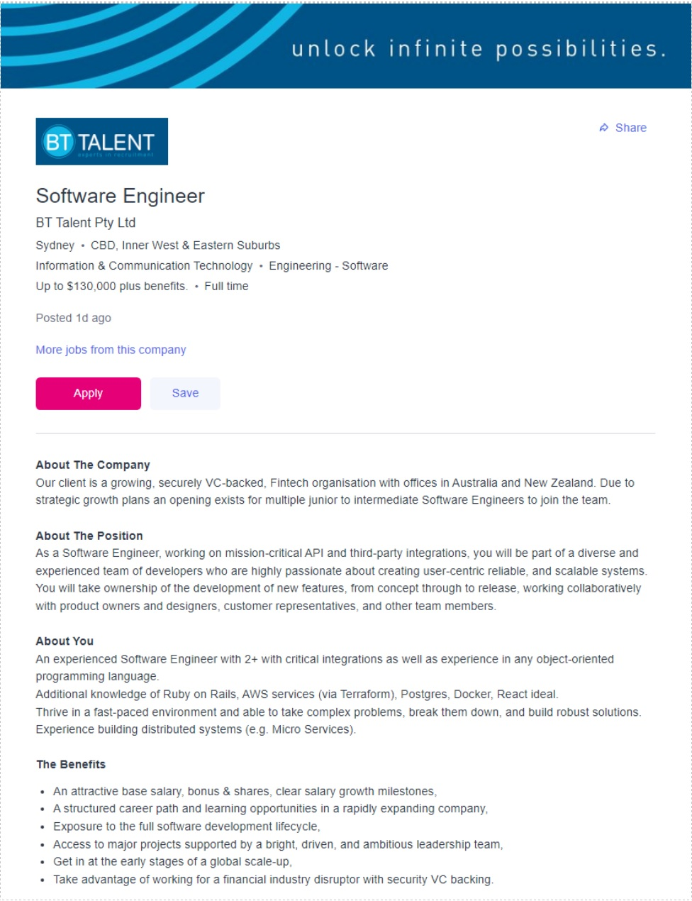

Ideal Job in IT

Job Information
The Role of a Software Engineer is a diverse role within a corporation but focuses on the development and optimization of software and computing systems in a business. The salary of a Software Engineer can vary depending on the responsibilities they are assigned. The duties of a Software Engineer are heavily focused on ‘back of house’ IT work such as coding and script work.
I drew great interest in the role of Software Engineer due to its creative aspect as well as its involvement in IT Languages and Coding — which happens to be my favourite type of work. I am passionate about effectively streamlining processes in a business environment. I am convinced that this role coincides with my passions and will allow me to work at my full potential.
A Software Engineer requires a solid understanding of a plethora of IT languages as well as the ability to effectively work in a team. This is because it is essential in this occupation to work alongside colleagues to create optimised system processes within a business as well as develop new code that will assist in making decisions on the business processes.
My general understanding of IT languages is poor in comparison to the requirements needed to fill the role of a Software Engineer. I need to vastly improve in those areas for my skills and qualifications to match the demands of a Software Engineer.
The first step to honing skills is always through education and application. Because of this, I intend to sharpen my knowledge through my studies at RMIT as well as looking for opportunities to get involved with technical projects in a range of places such as school, my workplace, and volunteer projects.